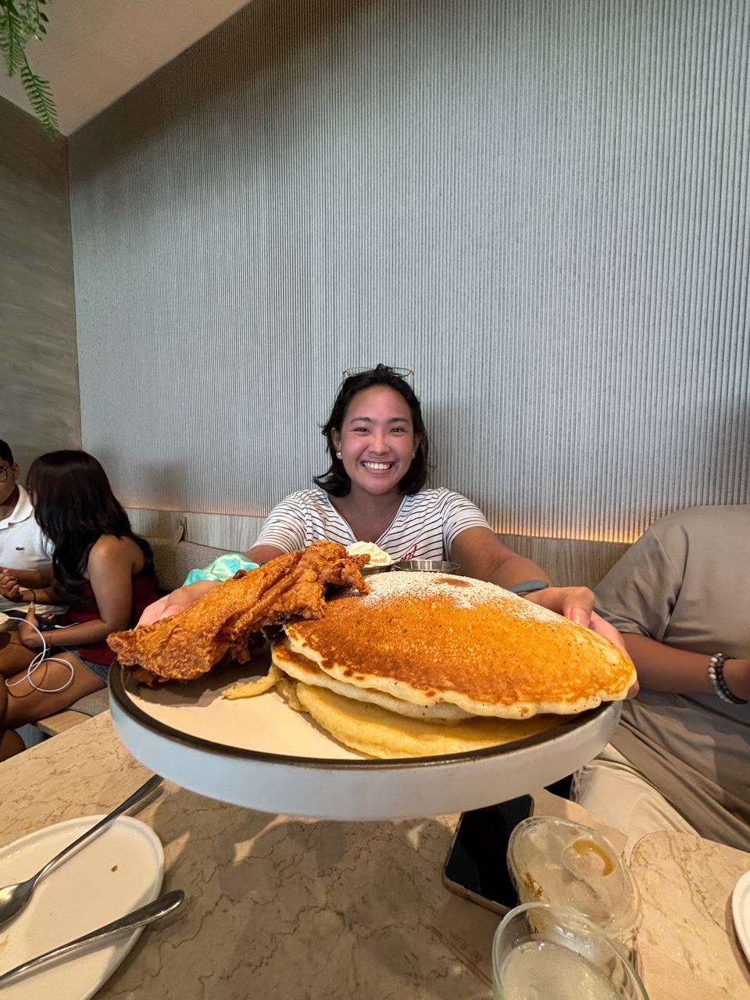
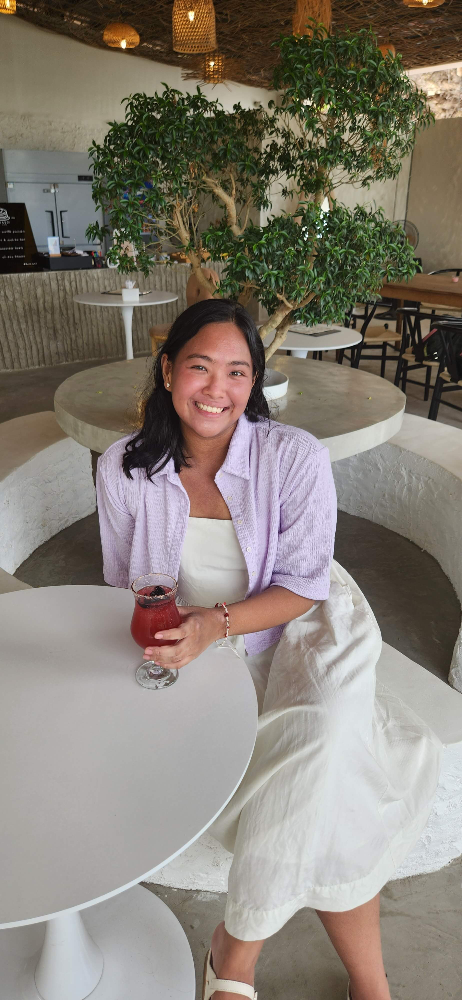

About Me
Hi! Angela here 🤓 I’m a former food entrepreneur and startup founder that’s looking to start a career in Product Design. My journey has been driven by a passion for creating delightful experiences for people, and now I'm channeling that same energy into the digital world.
My background in building a business from the ground up has given me a unique perspective on the entire product lifecycle. I thrive on solving complex problems and believe that the best products are born from deep empathy and a relentless focus on the user. I'm excited to bring my skills in entrepreneurship, problem-solving, and design to a team that's building meaningful and intuitive digital products.
My Work

Let's Work Together
I'm currently seeking new opportunities in Product and UX Design. If you're looking for a passionate designer with a unique entrepreneurial perspective, I'd love to chat!
angela.mercado.ux@gmail.com